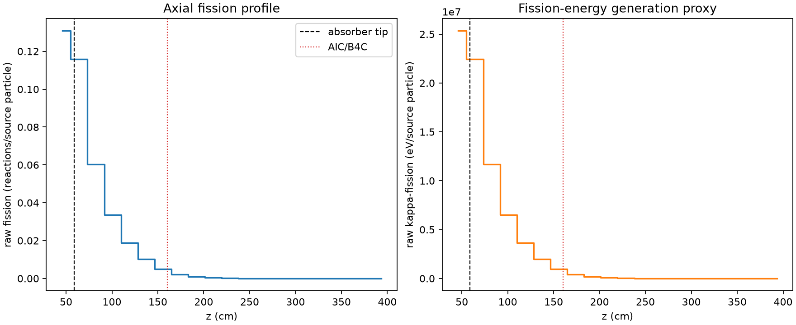
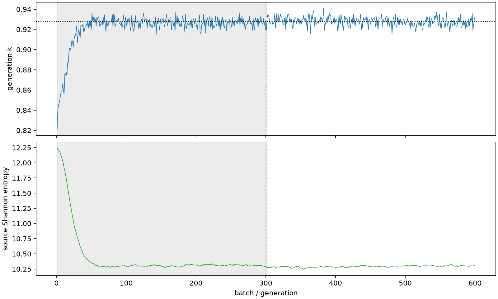

| field | value |
|---|---|
| experiment | V2-ADAPTIVE_01-0009 |
| k | 0.9277525701143126 |
| MC standard error | 0.00019276021269299073 |
| seconds | 924.028749694 |
| acceptance | not_assessed |
| convergence | review_required |
Completed is output integrity only; physical and statistical review required. Zero tallies do not prove zero production or zero uncertainty.
| diagnostic | value |
|---|---|
| geometric fuel voxels | 5280 |
| zero fission tally voxels | 370 |
| low signal fuel voxels | 2223 |
| low signal fission share | 0.00022932469928589524 |
| low signal kappa share | 0.00022937231749045278 |
| important fission share | 0.9500585479569765 |
| previous filter included | 3057 |
| duration estimate s | 1562.5173488400023 |
| actual minus estimate s | -638.4885991460023 |
| fission relative MC error | statistics |
|---|---|
| all_geometric_fuel | {"voxels": 5280, "positive_mean_voxels": 4910, "zero_mean_voxels": 370, "undefined_relative_error_voxels": 370, "median": 0.08349534823610383, "p95": 0.9066570352698947, "maximum": 1.0000000000000002} |
| low_signal | {"voxels": 2223, "positive_mean_voxels": 1853, "zero_mean_voxels": 370, "undefined_relative_error_voxels": 370, "median": 0.5341325362274288, "p95": 1.0, "maximum": 1.0000000000000002} |
| important_95pct | {"voxels": 1316, "positive_mean_voxels": 1316, "zero_mean_voxels": 0, "undefined_relative_error_voxels": 0, "median": 0.006850821635792146, "p95": 0.012725810427016215, "maximum": 0.014010091217020623} |
| outside_previous_filter | {"voxels": 2223, "positive_mean_voxels": 1853, "zero_mean_voxels": 370, "undefined_relative_error_voxels": 370, "median": 0.5341325362274288, "p95": 1.0, "maximum": 1.0000000000000002} |
| kappa_fission relative MC error | statistics |
|---|---|
| all_geometric_fuel | {"voxels": 5280, "positive_mean_voxels": 4910, "zero_mean_voxels": 370, "undefined_relative_error_voxels": 370, "median": 0.08337451540285679, "p95": 0.9064592996003279, "maximum": 1.0000000000000002} |
| low_signal | {"voxels": 2223, "positive_mean_voxels": 1853, "zero_mean_voxels": 370, "undefined_relative_error_voxels": 370, "median": 0.5325516161022628, "p95": 1.0, "maximum": 1.0000000000000002} |
| important_95pct | {"voxels": 1316, "positive_mean_voxels": 1316, "zero_mean_voxels": 0, "undefined_relative_error_voxels": 0, "median": 0.006839088881005165, "p95": 0.012705159323865543, "maximum": 0.01398975181067081} |
| outside_previous_filter | {"voxels": 2223, "positive_mean_voxels": 1853, "zero_mean_voxels": 370, "undefined_relative_error_voxels": 370, "median": 0.5325516161022628, "p95": 1.0, "maximum": 1.0000000000000002} |
| axial bin | fission share | kappa-fission share |
|---|---|---|
| 1 | 0.34599343793855 | 0.3459433368914709 |
| 2 | 0.3063387419577641 | 0.3063461979611357 |
| 3 | 0.15952212421440132 | 0.15954070902079023 |
| 4 | 0.08914296002222308 | 0.08915378357121412 |
| 5 | 0.049680837055381934 | 0.04968696634008923 |
| 6 | 0.0269540452764497 | 0.02695723590291288 |
| 7 | 0.013161128373317014 | 0.01316294812820609 |
| 8 | 0.005324041823084065 | 0.005325229746818013 |
| 9 | 0.0021958045002536536 | 0.0021963354973610688 |
| 10 | 0.0009273128656559131 | 0.0009275292875567898 |
| 11 | 0.0004231661040448378 | 0.0004232565583513047 |
| 12 | 0.00018139866619050965 | 0.00018143789980084926 |
| 13 | 7.503801017354435e-05 | 7.505813505874816e-05 |
| 14 | 3.478607868709654e-05 | 3.479663539148032e-05 |
| 15 | 2.1476570417284562e-05 | 2.1478962442297608e-05 |
| 16 | 1.252232718981003e-05 | 1.2523051546696241e-05 |
| 17 | 7.1649999283899144e-06 | 7.1637242145485145e-06 |
| 18 | 3.0804354795000703e-06 | 3.080225882570915e-06 |
| 19 | 8.982556016333226e-07 | 8.977321513899012e-07 |
| 20 | 3.4525206650457305e-08 | 3.472760507611279e-08 |
Histories include the inactive-to-active transition at batch 300. kappa-fission approximates fission energy production, not total heat deposition.

